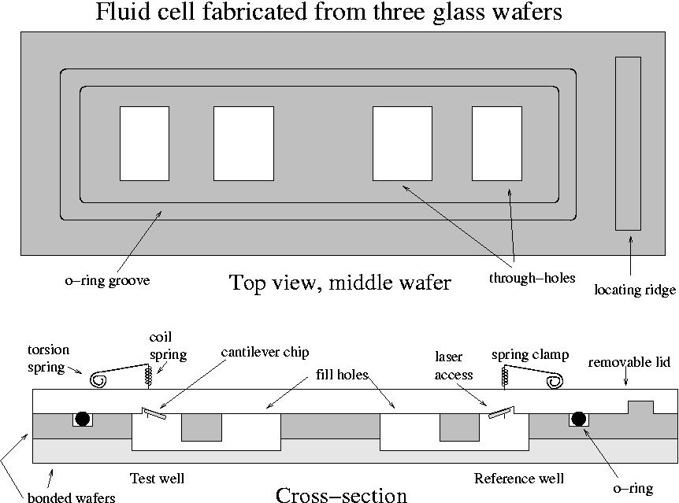

Building a Temperature-Dependent Static Deflection Measurement System at HPL
Goal: Observe DNA melting and protein denaturation via changes in static cantilever deflection as a function of solution temperature.These desired properties imply a cantilever chip mounted with a spring clip inside a glass well with a removable cover. Use of a well rather than channels will minimize reagent use. The well and an o-ring groove will be formed by etching a glass wafer. The flat cover will be held down with a low-force spring clip to accomodate the thermal expansion of the solution. The assembly will be mounted inside a copper block with an integrated temperature sensor and with a hotplate or Peltier heater attached. The fact that the heater surrounds the glass wells will minimize convection. Hole(s) will have to be drilled for optical access. The fluid cell will sit in a recess milled in the copper block to facilitate alignment with the optical access hole.
The Berkeley design has two ports per well in order to allow air to escape. A cell made from two bonded wafers could have two ports for each well within the o-ring. Therefore the feature of pipetting into one port while having the cantilever in the other could also be preserved. However caution is necessary so that fluids from the two wells don't mix either during dispensing or heating. This is especially true if the illumination comes from the filling side, as then the cells must be full. The Berkeley Microfab Lab has a wafer-bonder for glass. The Berkeley stockroom has 4" borosilicate ($10) and quartz wafers ($40) in stock.
A sturdy clip that accomodates multiple cantilever designs is desirable. The clip doesn't have to make electrical contact or allow for actuation of the cantilever. It must be possible to mount a cantilever, seal the fluidic chamber and then locate the laser beam onto the cantilever tip. Reflections from the glass may complicate matters. If a cantilever with a tip is used, the laser beam must be incident on the tipless side. Probably attaching the cantilever to the lid and then the lid to the wafer with the cells is the easiest method.
One possibility for removing the thermal-expansion-induced deflection of the cantilever is to put matching films on either side. The side to be functionalized can have a Cr/Au coating, while the other side can have a plain Cr coating. Whatever the initial deflection (unimportant if not too large), we expect no temperature dependence if the thickness-TCE products of the two sides are equal. While this balancing will indubitably not completely eliminate any temperature-dependent background, it should substantially reduce it. Coating one side of the cantilevers at a time with an evaporator should not be difficult.

Here I've drawn the o-ring as rectangular, although clearly the task of finding the right size would be made easier by using a round o-ring.
The spring clamp is copied from Veeco's fluid cell. A piece of wire is formed into a torsion spring at its attachment point where it is epoxied to the glass. The wire's other end goes through a small hole in the glass (sealed how?) and forms a clip that holds the chip. The pressure on the chip is determined by a coil spring around the wire that is in compression. Because the lid is the removable component, the mounting of the cantilever can be done under a convenient separate stereo zoom microscope.
It's not clear from this drawing how the laser beam would be incident on the cantilever chip. I'm assuming that the position and tilt of the chip can be chosen so that the laser can be placed at a reasonable distance and the reflection can be collected by a detector. The large size of the spring clamp compared to the chip makes this task more difficult. A major question is whether there's a workable design with one-sided optical access so that the lower side can be clamped on a heater. The question comes down to: will capillary waves on the top surface or distortion in the cap ruin the image? A system which allows two-sided access would permit using the Berkeley chips but would complicate the optics and thermal design. Perhaps the one-sided optical access could be from the bottom. Another point is that the laser should reach the cantilever by going through only unmachined, unetched glass surfaces, not the tilted flat that is used for mounting.
The size of the paddle at the end of the cantilever is constrained by the requirement that the mark not walk off the end as it deflects. At 0.2 microns/K (Berkeley number), over 80 C, the tip deflects 16 microns. Assuming that thermally induced deflections are not cancelled by proper coating, the paddle at the end of the cantilever must be 50-100 microns in diameter. The lens diameter is about 1 mm; lens focal length is about 5 cm. Final beam diameter = lambda * f/D = 33.5 microns.
According to Min's paper the deflection deltaH due to a stress sigma (in J/m2 or N/m) is given by Stoney's Formula:
deltaH = (/ (* 3 sigma (- 1 nu) (* L L)) (* E d d))
where nu is the Poisson ratio (0.3 for SiN), E is modulus (1.8x1011 N/m2 for SiN) and L and d are length and thickness. The Si bulk modulus is 1.5x1011 N/m2 and that its Poisson ratio is 0.17. Thus (/ (- 1 nu) E) for SiN is 3.9x10-12 m2/N and for Si is 5.5x10-12 m2/N, giving bulk Si a 40% advantage for the same cantilever dimensions. Si also has a higher reflectivity in the red although this may not matter with a thick enough metallization. Sensitivity will scale with (L/d)2. Let's call ((1 - nu)/E)*(L/d)2 the "compliance." Here are the calculations for the table.
| Maker | Material | L (µm) | d (µm) | compliance (µm/(N/m)) | Tipless? | Array? | Width (µm) |
| Min, UCB, 2004 | poly SiN | 200 | 0.5 | 0.62 | Yes | Yes | 40 |
| Wu, UCB 2001 | poly SiN | 600 | 0.65 | 3.3 | Yes | Yes | ? |
| Veeco MLCT-AUHW 00-103-0925 | poly SiN | 320 | 0.6 | 1.1 | No | No | 20 |
| Nanoworld Hybrid-nitride #2 | poly SiN | 200 | 0.5 | 0.62 | No | 2 | 40 |
| Nanoworld Arrow TL-2 or TL-8 | bulk Si | 500 | 1.0 | 1.4 | Yes | 2 or 8 | 100 |
| Asylum Biolever | Si | 100 | 0.16 | 2.2 | No | 2 | 30 |
| MikroMasch CSC12/Tipless/Cr-Au | Si | 350 | 1 | 0.68 | Yes | 3 | 35 |
| Original IBM biosensing work | Si | 500 | 1 | 1.4 | Yes | Yes | 100 |
Conclusion: cantilevers with similar sensitivity to the Berkeley ones are commercially available. The best choice might the NanoWorld Arrows, which combine reasonable sensitivity with experimentally convenient width and are available tipless and in array form. (However, the specifications of the Arrows show that the thickness may vary by up to a factor of 5!) The Arrow TL-2 cantilevers cost $18 each in lots of 50. Alternately similar tipless bulk Si cantilevers could be made here at HPL -- they are much simpler than the heated-tip, electrically contacted Porcupine cantilevers we already have.
Last modified:
This document is: http://